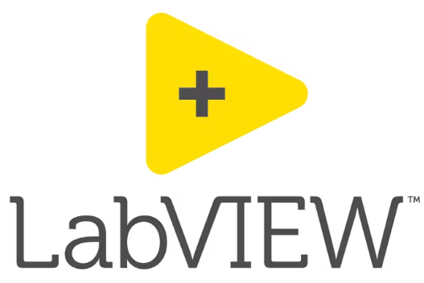

Ingénieure d'État en Génie des Systèmes Industriels, je mets l'ingénierie au service de la performance industrielle en combinant analyse, optimisation et innovation.
Mon parcours académique et mes expériences en entreprise m'ont permis d'appréhender les systèmes de production dans leur globalité, depuis l'étude des procédés et l'analyse des performances jusqu'au développement de solutions techniques adaptées aux enjeux de l'industrie.
Animée par une volonté constante d'apprendre et de progresser, je souhaite intégrer un environnement industriel stimulant où je pourrai contribuer à l'amélioration des procédés, à l'excellence opérationnelle et à la création de valeur.
Oujda, Maroc · Ouverte à toute opportunité nationale et internationale
Exigences ISO 9001:2015Approche processusGestion des risquesCAPAKPIAmélioration continue
Formation
Parcours académique
2023 — 2026
Ingénieure d'État en Génie des Systèmes Industriels
EHEI — École des Hautes Études d'Ingénierie, Oujda
Cycle ingénieur orienté automatisme industriel, contrôle avancé des procédés, qualité et amélioration continue. PFE réalisé chez Holcim Oujda sur le système Kiln Master.
2021 — 2023
Technicienne Spécialisée en Efficacité Énergétique
IFMEREE — Institut de Formation aux Métiers des Énergies Renouvelables
Formation ciblée sur l'audit énergétique, l'efficacité énergétique des installations et les énergies renouvelables.
2020 — 2021
Baccalauréat — Option Sciences Physiques
Qadi Ibn Al Arabi, Oujda
Formation scientifique générale ayant posé les bases d'analyse et de rigueur poursuivies dans le cursus technique.
Compétences
Expertise pluridisciplinaire
Méthode 8D — Résolution de problèmes
Maîtrise complète de la démarche 8D pour la résolution structurée de problèmes industriels : constitution d'équipe, description du problème, actions de confinement, analyse des causes racines (RCA), actions correctives, validation, prévention et clôture.
Maîtrise des outils de contrôle qualité, de l'analyse des non-conformités et de la mise en œuvre d'actions correctives. Utilisation des méthodes 8D, AMDEC, Ishikawa, Pareto et application des principes de la norme ISO 9001.
8DAMDECIshikawaParetoISO 9001HSELOTO
Amélioration Continue
Analyse des performances industrielles, identification des opportunités d'amélioration et application des méthodologies Lean Manufacturing, Six Sigma, DMAIC et PDCA afin d'optimiser les procédés.
LeanSix SigmaDMAICPDCAKaizen5SVSM
Automatisme & Contrôle-commande
Développement de solutions d'automatisation sous Siemens TIA Portal et LabVIEW, programmation d'automates Siemens, conception d'interfaces HMI et supervision de procédés industriels.
TIA PortalLabVIEWHMISCADAOPCABB AC800MRégulation PID
Gestion Industrielle & Logistique
Connaissances en gestion de production, gestion des stocks, planification industrielle et coordination de projets dans un environnement de production.
Gestion de productionStocksPlanificationKPISupply Chain
Efficacité Énergétique
Réalisation d'audits énergétiques, analyse des consommations et proposition de solutions visant à améliorer l'efficacité énergétique des installations industrielles.
Audit énergétiqueOptimisationISO 50001
Logiciels maîtrisés
MATLAB
CATIA V5
AutoCAD
Caneco BT
TIA V16
Fusion 360

LabVIEW
MiniTab
Projets
Réalisations académiques
Projet de Fin d'Études
Implémentation du système Kiln Master — Holcim Oujda
Dans le cadre de mon Projet de Fin d'Études chez Holcim Oujda, j'ai réalisé une étude de faisabilité pour l'implémentation du système de contrôle avancé Kiln Master sur la ligne de cuisson, avec pour objectifs d'améliorer la stabilité du procédé, d'optimiser les performances énergétiques et de préparer le déploiement d'une solution d'automatisation avancée.
Analyse de la fiabilité des instruments et qualification des signaux critiques
Création des tags OPC pour la communication ABB AC800M ↔ HLC Server
Développement d'un prototype fonctionnel sous LabVIEW intégrant 3 boucles de régulation (BZT · ID Fan · Alimentation farine)
Validation par simulation : scénarios nominal, calibration CaO libre et détection de défaut capteur
Kiln MasterLabVIEWOPCAC800MContrôle avancéDMAIC
Automatisation et supervision d'un torréfacteur industriel
Développement d'une solution complète d'automatisation et de supervision d'un torréfacteur industriel sous Siemens TIA Portal V16, capable de piloter automatiquement le procédé de torréfaction grâce à la gestion des recettes de production, à la régulation de la température et au contrôle de la vitesse de brassage.
Programmation d'un automate Siemens S7-1500 sous TIA Portal V16
Développement d'une IHM Siemens KTP700 pour la supervision temps réel et le suivi des alarmes
Gestion des modes Manuel et Automatique avec gestion de recettes
Régulation de la température et contrôle de la vitesse de brassage
TIA Portal V16S7-1500KTP700Régulation
Système sécurisé de gestion des recettes industrielles
Conception et développement d'un système sécurisé de gestion des recettes de production sous Siemens TIA Portal V16, garantissant la protection des paramètres critiques grâce à une authentification par mot de passe et un système d'alarmes déclenché après plusieurs tentatives d'accès non autorisées.
Authentification par identifiant et mot de passe
Gestion des utilisateurs et des niveaux d'accès
Alarmes après tentatives de connexion échouées
IHM ergonomique dédiée à la gestion sécurisée des recettes
TIA PortalCybersécuritéGestion des accèsIHM
Prototype IoT pour le suivi des paramètres environnementaux
Conception et réalisation d'un prototype IoT destiné à la surveillance en temps réel de la température et de l'humidité : les données sont collectées via un capteur connecté, transmises à une application web développée avec Django REST API et visualisées en temps réel, avec un système de notifications automatiques.
Système IoT basé sur ESP8266 et capteur DHT11
Application web Django REST API, visualisation JSON / HTML
Notifications automatiques via Gmail, WhatsApp et Telegram
Conception du PCB (EasyEDA), modélisation 3D du boîtier (Fusion 360) et fabrication par impression 3D
ESP8266DHT11DjangoREST APIEasyEDAFusion 360
Projet de Fin d'Année — Automatisation d'une station de pompage électrique
Conception et automatisation complète d'une station de pompage électrique conforme au Cahier des Prescriptions Spéciales (CPS), incluant le dimensionnement électrique, les schémas électriques, la programmation de l'automate et une interface de supervision.
Schémas électriques normalisés sous QElectroTech
Dimensionnement des câbles et choix des protections via Caneco BT
Programmation d'un automate industriel avec supervision
QElectroTechCaneco BTAutomatismeSupervision
Conception d'un Système de Management de la Qualité (SMQ)
Développement d'un Système de Management de la Qualité pour un établissement d'enseignement supérieur, en s'appuyant sur les principes de la norme ISO 9001:2015.
Cartographie et modélisation des processus stratégiques, opérationnels et supports
Élaboration de la documentation qualité (politique qualité, procédures et manuel qualité)
Définition d'indicateurs de performance (KPI) pour le suivi des processus
Mise en œuvre d'une approche basée sur les risques et les opportunités
Proposition d'actions d'amélioration continue à partir de l'analyse des dysfonctionnements
ISO 9001:2015PDCAKPIGestion des risquesCAPA
Modélisation mécanique sous CATIA V5
Réalisation de plusieurs projets de conception mécanique sous CATIA V5, incluant la modélisation 3D de pièces mécaniques, la création d'assemblages et l'élaboration de plans techniques cotés.
Modélisation 3D de pièces mécaniques
Réalisation d'assemblages fonctionnels
Élaboration de plans cotés conformes aux exigences de fabrication
Respect des contraintes géométriques et fonctionnelles
CATIA V5Modélisation 3DAssemblagesPlans cotés
Système de gestion des employés
Développement d'une application de gestion des employés basée sur une base de données relationnelle : analyse des besoins, modélisation avec les méthodes MCD et MLD, et implémentation en SQL.
Modélisation de la base de données (méthode Merise — MCD & MLD)
Conception des relations entre entités
Implémentation et requêtes SQL
SQLMeriseMCDMLD
Expériences
Stages & Expériences professionnelles
Projet de Fin d'Études
Étude de faisabilité Kiln Master & Prototype LabVIEW
Fév. 2026 — Juin 2026
Holcim Oujda · Ingénieure stagiaire — Contrôle avancé des procédés
Réalisation d'une étude de faisabilité pour l'intégration du système Kiln Master
Identification et qualification des signaux nécessaires au fonctionnement du système
Analyse de la fiabilité de l'instrumentation et proposition d'actions d'amélioration
Création des tags OPC pour la communication ABB AC800M ↔ HLC Server
Développement d'un prototype fonctionnel sous LabVIEW : 3 boucles de régulation (BZT · ID Fan · Alimentation farine)
Validation par simulation : 3 scénarios concluants (nominal · calibration CaO libre · détection défaut capteur)
Kiln MasterLabVIEWAC800MOPCDMAIC
Stagiaire en Maintenance Industrielle
Août 2025
ONCF — Office National des Chemins de Fer
Découverte des systèmes ferroviaires et des équipements de maintenance
Initiation à la Gestion de la Maintenance des Ouvrages (GMO)
Participation aux opérations de maintenance industrielle
Observation des méthodes de diagnostic et de fiabilisation des équipements
Maintenance industrielleGMODiagnosticFiabilité
Stagiaire en Contrôle Qualité & Sécurité Industrielle
Septembre 2024
Atlas Bottling Company (ABCO Coca-Cola) — Oujda
Contrôles qualité des bouteilles en verre · analyses CO₂, ozone et boissons
Participation aux inspections HSE · suivi des check-lists de sécurité
Application de la procédure LOTO pour la sécurisation des interventions
Vérification de la conformité des équipements et des dispositifs de sécurité
Contrôle qualitéISO 9001HSELOTO
Stagiaire en Optimisation Énergétique
Avr. 2023 — Juil. 2023
LafargeHolcim — Holcim Oujda
Analyse des consommations énergétiques des installations industrielles
Identification d'opportunités d'amélioration de la performance énergétique
Participation aux actions d'optimisation des procédés